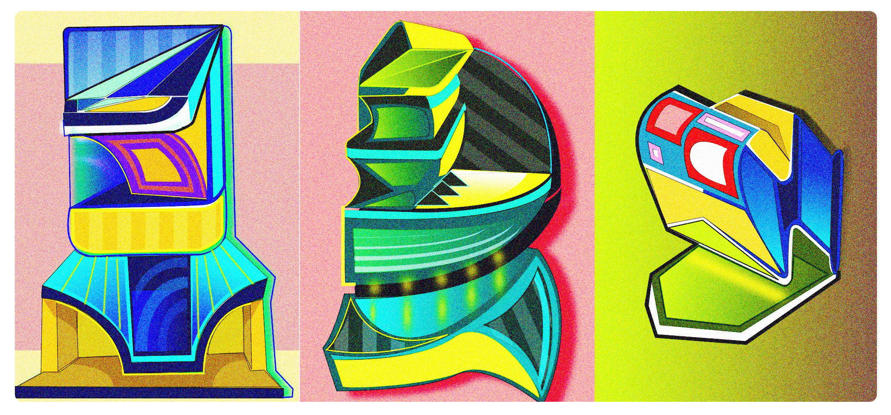
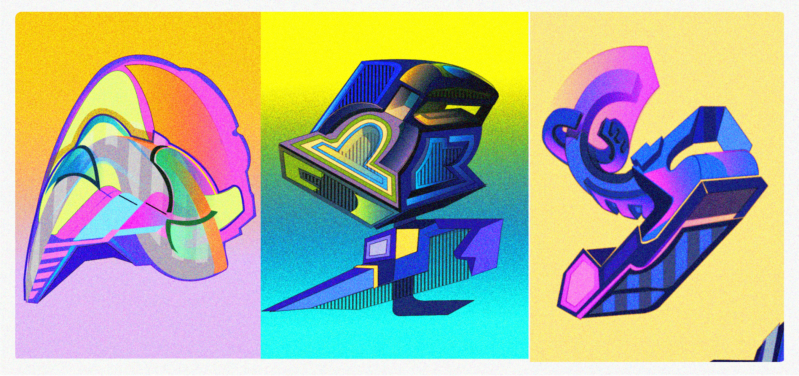

IMAGES EXPLORATION 2023
Concept:
Images are the result of an exploring exercice, with absence of initial objective or concept to draw, where just guided by espacial intuition and own color combination
criteria, every image is progressively constructed.
I like to think that every of those images connect or join, the rational world, represented by geometrical forms, with the emotional world, represented by the use
of vibrant, intense, energetic and positive colors.
I think also that the weight of the composition is based on how the forms an colors are combinated so no addition symbolism of figurative resources
are neccesary for sustain them.
When I draw a piece I don´t think in these one as an isolated element, instead, I expect to fit it in the complete armony of the collection.
The election of "three units" combination per piece, corresponds also to aesthetic criteria,
with certain exceptions that I expect to give especial enphasis, isolating them of the rest.
I become that a piece has being finished when the secret message of beauty flourish, being transmited in a first initial visual impact, so no reflexion or concept it´s
neccesary for explain it.
Technique: Although images are created in a digital environment, I like to work in essence as close as possible to the tradicional way, so I only use an svg editor for creating the base, and an photoeditor for color retouch . The first one allows me great flexibility testing and applying different color combinations and a quick way for ordering and composing forms in different ways.
Technique: Although images are created in a digital environment, I like to work in essence as close as possible to the tradicional way, so I only use an svg editor for creating the base, and an photoeditor for color retouch . The first one allows me great flexibility testing and applying different color combinations and a quick way for ordering and composing forms in different ways.


